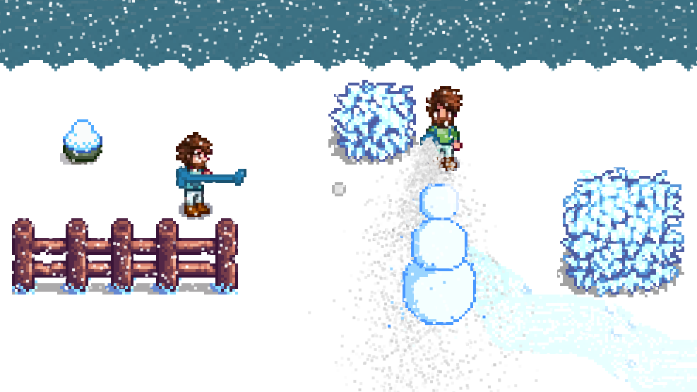

Snow man's land
This way my first game written in C++. The CPU based rendering required significant optimization and introduced me to the workings of rasterization. I gained a lot of experience with UI programming during this project. Implementing the AI's behaviour familiarised me with AI-programming and pathfinding algorithms. The wave function collapse algorithm is utilized by the level editor to determine the visual design of the tilemap.